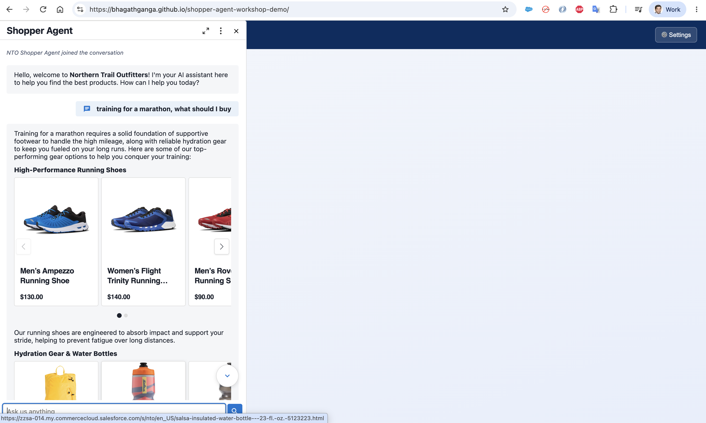

You don't need a storefront to try the agent. This demo playground is a single static page that loads the Cimulate chat widget and connects to your agent using the connection JSON you copied in Section 1. Paste, connect, and chat.
Navigate to https://bhagathganga.github.io/shopper-agent-workshop-demo/. You'll see a config form. (If you don't, click the Settings button in the top-right.)
Paste the connection JSON from Step 1.6 into the config box and click Fill fields from JSON — the SCRT2 URL, Organization ID, and ES Developer Name fill in automatically. Give it a chat header label (for example, NTO Shopper Agent).
{
"channelAddressIdentifier": "942c5e6d-e688-49c0-ad65-c1829e0130f8",
"OrganizationId": "00DjW000000QxVu",
"DeveloperName": "NTOShopperAgent_ES",
"Url": "https://orgfarm-0389a86d66.my.salesforce-scrt.com"
}
Everything is stored only in your browser. Use your own org's values, not the example above.
Click Connect. The widget loads and the agent greets you with its welcome message.
Now play around. Try a natural request like "training for a marathon, what should I buy" — the agent searches the NTO catalog and returns real products (running shoes, hydration gear) as a browsable carousel with names and prices.

That's it! You have a working Shopper Agent you can drop into any storefront. Next, personalize how it behaves in Section 3, and give it document-grounded answers in Section 4.